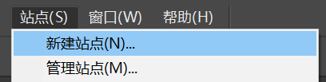
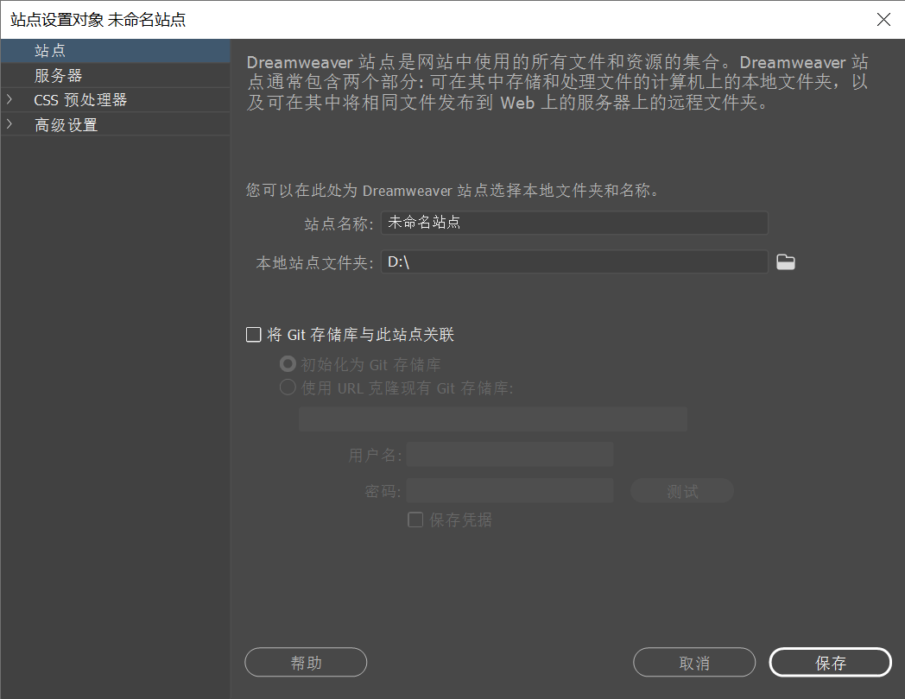
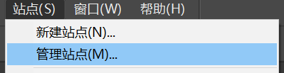
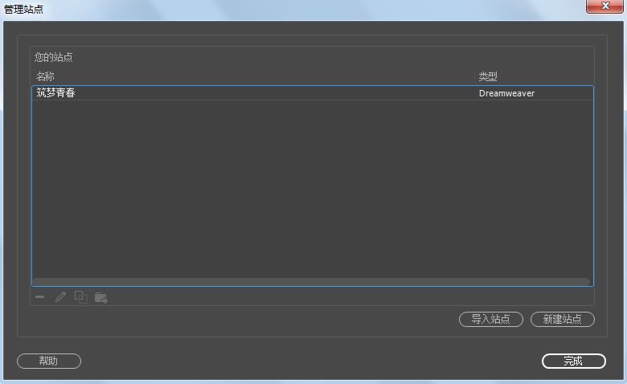

模块二 站点的创建与管理
掌握本地站点创建与管理的基本操作
站点的创建与管理
-
创建站点是建立网站的第一步。
站点可以简单地理解为管理和存放网站中所有网页及各种素材的文件夹。通过站点，可以方便地对站点文件进行管理并能够减少链接与路径方面的错误。
-
按照地理位置划分，站点分为本地站点和远程站点，在本地计算机硬盘中存放网页的文件称为本地站点，在Internet网络服务器上存放网页的文件夹称为远程站点。
-
按照站点的交互性划分，站点分为静态站点和动态站点。在静态站点中，浏览者与网页之间没有交互活动，静态页面向每位浏览者发送完全相同的响应；在动态站点中，动态页面可自定义响应，根据浏览者的输入信息提供不同的页面。
1.1 创建本地站点
- 创建本地站点
- ①运行DW，选择菜单“站点”→“新建站点”命令，弹出“站点设置对象”对话框。
- ②选择“站点”选项，在“站点名称”文本框中输入用户自定义的站点名称。在“本地站点文件夹”文本框中直接输入站点文件夹的路径，或者单击其后的“浏览文件夹”按钮，在打开的“选择根文件夹”对话框中进行调整。
- ③如果要对站点属性进行详细的设置和调整，可以选择“高级设置”选项，在弹出的选项卡中进行设置。
- ④在“站点设置对象”对话框中单击“保存”按钮，完成本地站点的创建，此时“文件”面板中将显示站点中的所有文件和文件夹。
- 
-

站点设置对象对话框
1.2 编辑站点
- 编辑站点
- ①选择菜单“站点”→“管理站点”命令，或者在“文件”面板的下拉列表中选择“管理站点”命令，打开“管理站点”对话框。
- ②选择要编辑的站点，单击“编辑”按钮，或者直接双击站点名称，在弹出的“站点设置对象”对话框中可以对站点信息进行修改。
- ③编辑完成后，单击“保存”按钮，返回“管理站点”对话框，单击“完成”按钮。
- 
-

管理站点对话框
1.3 复制站点
- 复制站点
- ①选择菜单“站点”→“管理站点”命令，打开“管理站点”对话框，选择要复制的站点，单击“复制”按钮，将出现新站点。
- ②用鼠标双击复制出的站点，在弹出的“站点设置对象”对话框中进行修改，单击“保存”按钮，返回“管理站点”对话框，单击“完成”按钮。
-
管理站点对话框
1.4 删除站点
- 删除站点
- 选择“站点”→“管理站点”命令，打开“管理站点”对话框，选择要删除的站点，单击“删除”按钮，即可将站点删除。
-
管理站点对话框
删除站点只是删除了站点的定义信息，硬盘中相应的位置的文件和文件夹并不会被删除。
1.5 导出和导入站点
- ①导出站点
- ①选择菜单“站点”→“管理站点”命令，打开“管理站点”对话框，选择要导出的站点，单击按钮。
- ②在弹出的“导出站点”对话框中，选择站点的定义文件的保存位置，输入站点定义文件的保存位置，输入站点定义文件的文件名，单击“保存”按钮。
- ①导入站点
- ①选择菜单“站点”→“管理站点”命令，打开“管理站点”对话框，单击“导入站点”按钮，弹出“导入站点”对话框。
- ②选择导入站点定义文件，先单击“打开”按钮，在单击“管理站点”对话框中的“完成”按钮。
-
管理站点对话框
导出站点时，只是将站点的定义信息保存到站点定义文件（.ste）中，不包括站点文件夹中的文件和文件夹。
站点被导入后，导入的站点将出现在“文件”面板的列表中，如果有重名站点，则导入的站点名称后面自动加上数字“2”。